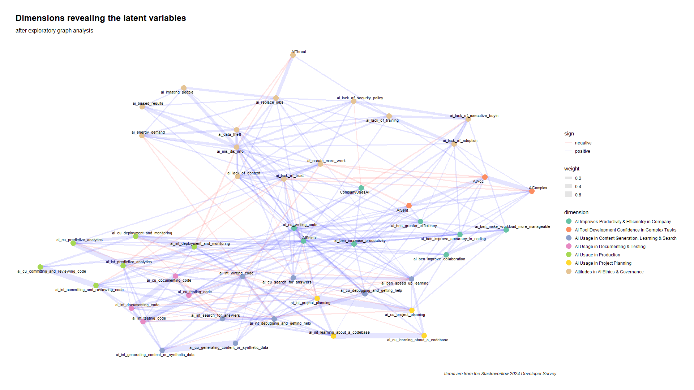
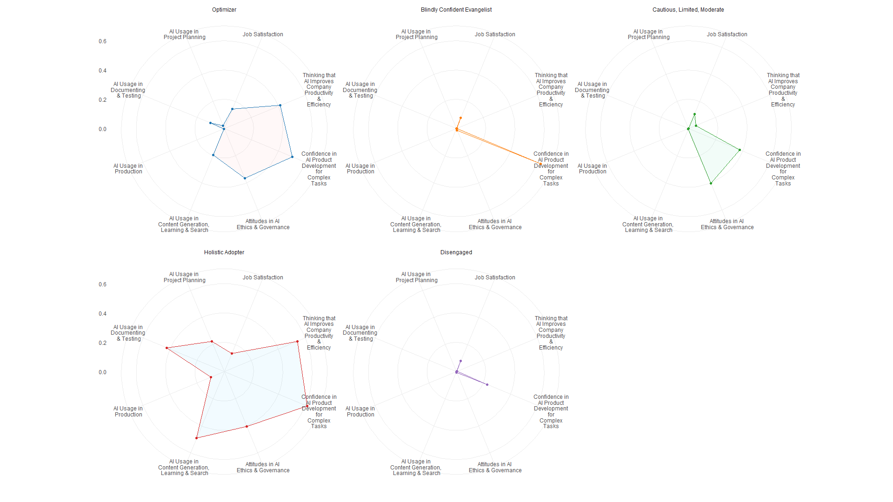
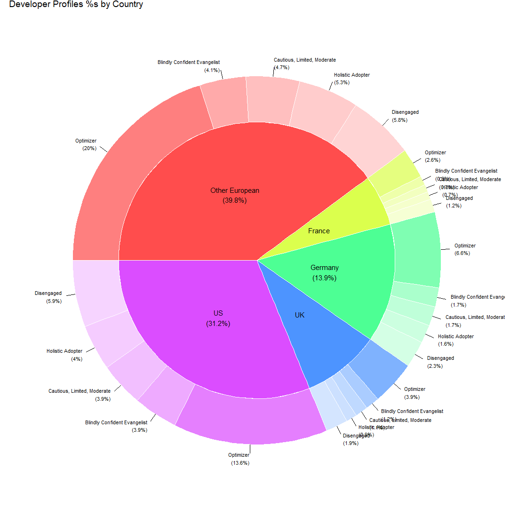
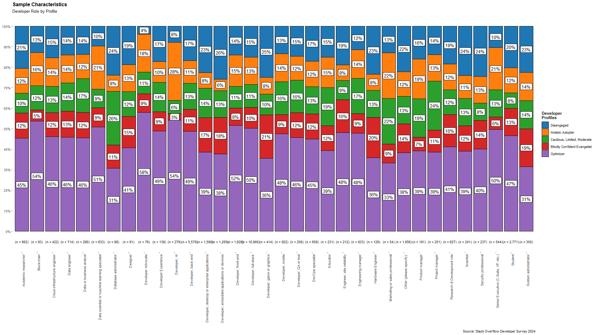

Part 1: Developer Profiles with 2024 Stack Overflow Developer Survey
Why it is a good idea to focus on the individuals instead of companies:
When discussing AI, we often focus on the companies involved. However, the diversity of human attitudes towards AI plays a crucial role in shaping the development and governance of AI systems. Therefore, it is essential to understand the profiles of individual AI developers, as these professionals directly impact how AI systems are developed and governed. Unlike government regulators, tech professionals have immediate influence over AI use cases and company policies. Despite their significant impact on AI systems that affect societies, we have limited knowledge about developer attitudes towards AI.
This gap in understanding is particularly significant when considering how developers’ diverse backgrounds influence their approach to AI development and adoption. The annual StackOverflow Developer Survey is a pragmatic start to addressing this gap.
The Annual Stack Overflow Developer Survey
Stack Overflow has long been the primary resource for developers until the generative AI boom. You have probably seen the news about the drastic drop in the site’s traffic with the introduction of chatbots like ChatGPT. In the spring of 2024, Stack Overflow announced a partnership with OpenAI in which Stack Overflow will provide vetted technical content through OverflowAPI to enhance OpenAI’s models, while OpenAI will integrate Stack Overflow’s validated knowledge directly into ChatGPT with proper attribution. The deal has caused controversy among the Stack Overflow community: a considerable number of contributors expressed anger and protest over using their contributions to train AI models. While the annual Developer Survey from 2024 is likely to reflect some of this drama, the data is as valuable as always and includes quite a few items on AI usage and attitudes toward AI.
The sample
Using the survey items on AI, I estimated profiles from two broad territories, namely, developers from the US & Europe. Of the participants surveyed, 31% reported living in the US. As for the European sample, 14% of the developers are from Germany, 9% from the UK, 6% from France, and the remaining 40% come from various other European countries. Almost 1/3 of this sample consists of full-stack developers, while back-end developers (16 %) hold the second most common role. These two are followed by students (8 %) and front-end developers (5 %). The percentages of all remaining developer roles range from 0.01% to 5%.
Analyses
Latent variables
An exploratory graph analysis of 47 items reveals seven dimensions (read as latent variables). The figure below illustrates the items under analysis, along with the estimated dimensions and their corresponding labels. The nodes represent the survey items, while the edges indicate the associations between these items. Node colors reflect the estimated underlying latent constructs. In other words, the identified latent constructs (dimensions) are a good and accurate psychometric summary of the 47 items on AI.

These latent constructs tap into various aspects of AI usage and attitudes toward AI. For example, AI Improves Productivity & Efficiency in Company reflects the belief that the adoption of AI by the developer’s company has led to higher productivity and efficiency. AI Tool Development Confidence in Complex Tasks measures the stance on AI adoption, trust in its accuracy, and confidence in AI handling complex tasks. All the other labels should be self-explanatory.
Profiles
I utilized all these seven latent variables along with an additional latent variable that measures overall job satisfaction to estimate five distinct developer profiles. Here is what I discovered.
- Job satisfaction within this sample is generally low.
- AI usage in production is minimal across all profiles.
See the visual below to form a picture in your head before I list a few brief details about each profile.

- The profile ratios in the sample are quite similar across territories.

Profile 1: the Optimizer
This profile is the most common, representing 47% of the sample. I mentioned that the sample is dominated by full-stack, back-end, front-end developers & students. Well… after these roles, the most common professions are developers of “Mobile Apps”, “Desktop or Enterprise Apps”, “Embedded Applications or Devices”, and “Academic Researcher”. This profile is an optimizer. The AI adoption and general orientation towards AI are balanced; there is 0 or almost 0 usage of AI in production and project planning.
Profile 2: the Blindly Confident Evangelist
12 % of the sample is represented by this profile; I am sure you have come across the type. There is an unwavering faith in AI’s ability to handle complexity. However, in contrast, scores on everything else are very, very low. For this profile, three roles stand out besides the sample’s most frequent developer types: “Academic Researcher,” “Research & Development Role,” and “Data Engineer”.
Profile 3: the Cautious, Limited, Moderate
The percentage of this profile is another 12 %. This profile is relatively conservative in adopting broad AI solutions. We also observe moderate levels of confidence in AI handling complex tasks and moderate concerns about AI ethics and governance. My guess is that the general orientation is shaped by the opposing narratives around AI: AI the savior vs. AI the destructor! So, what are the most frequent roles besides the usual suspects of the sample, you ask? “Engineering Manager”, “DevOps Specialist”, “Academic Researcher” and “Data Engineer”.
Profile 4: the Holistic Adopter
14 % of the sample is classified as this profile that embraces AI across multiple domains—from content generation, learning, and search to documenting and testing. The profile is characterized by high scores on thinking AI improves company productivity & efficiency and AI usage in content generation, learning & search. Compared to other profiles, this profile has the highest scores in AI usage for documenting & testing and in project planning with AI. “Data Scientist or Machine Learning Specialist” is the most frequent role following the sample’s most frequent developer types.
Profile 5: the Disengaged
17% of the sample is disengaged from anything related to AI, with minimal scores on every dimension. The percentages of developer types are similar to the first profile: the optimizer.
Finally…
If you want to reverse the order and see the developer roles by profiles, the chart below is all yours to stare at.

… and … There is an app for it!
Hmm.. what’s that?.. You are intrigued and want to know which of these profiles you might be?.. Well.. lucky you… there is an app for that! Go to the following link, respond to the 64 items, and learn your profile. It should take <10 minutes.
https://stack-overflow-developer-profiler-2024.streamlit.app/
In Part 2 of this blog post, we’ll talk about causality. I’ll add the link later. Hope you come back to read that as well.